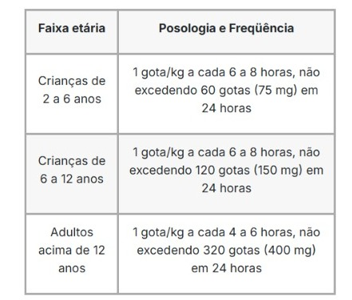
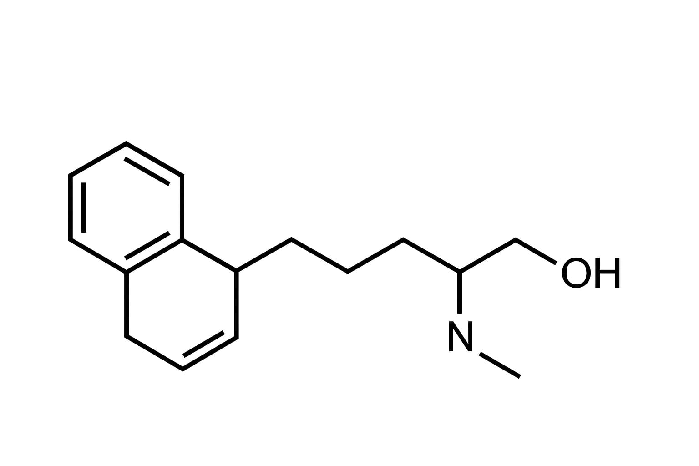

Para o que serve
O Dramin é indicado para prevenir e tratar náuseas e vômitos em situações como: gravidez, enjoo do movimento, após radioterapia, pré e pós-operatório. Também auxilia em transtornos vertiginosos e labirintite.
Estrutura Molecular
Estrutura Molecular
Efeitos colaterais
Visão turva, boca seca, retenção urinária, tontura, sonolência, insônia ou irritabilidade. Procure orientação médica caso ocorram reações graves.
Posologia
Comprimidos (adultos acima de 12 anos)
1 a 2 comprimidos (50–100 mg) a cada 4 horas, sem ultrapassar 8 comprimidos (400 mg) em 24 horas.
Gotas (adultos e crianças acima de 2 anos)
1 gota/kg de peso corporal (1,25 mg/kg), respeitando a dose máxima diária recomendada pelo médico.
Dica: não administre medicamentos diretamente na boca de crianças. Use sempre colher ou seringa oral.
Estrutura Molecular
Contraindicações
Contraindicado para pessoas com hipersensibilidade ao dimenidrinato, à piridoxina ou a qualquer componente da fórmula. Consulte um médico antes do uso.
Composição
Cada comprimido contém 25 mg de dimenidrinato e 5 mg de cloridrato de piridoxina. Excipientes: propilenoglicol, sacarina sódica, benzoato de sódio, aroma e água purificada.
Sobredosagem
Procure ajuda médica imediatamente. Não se automedique. Informe ao médico a quantidade ingerida e leve a embalagem, se possível. Em emergências, ligue 192 (SAMU).